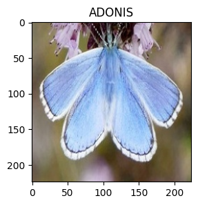
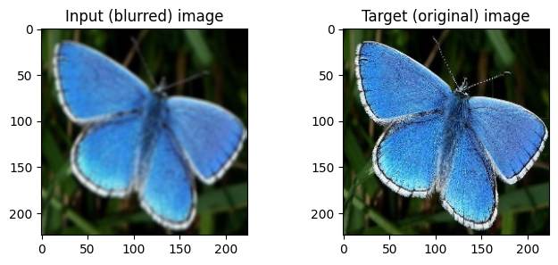
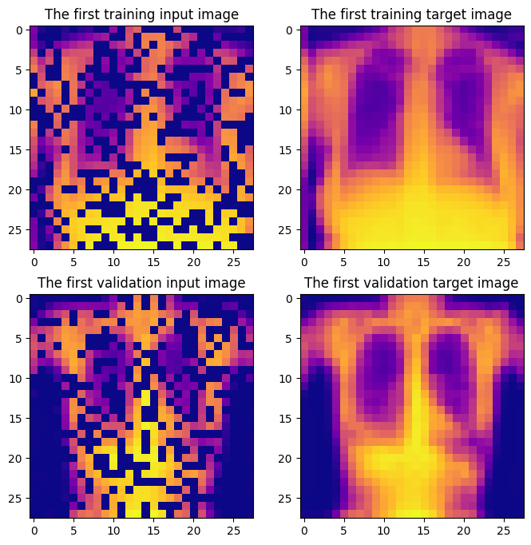
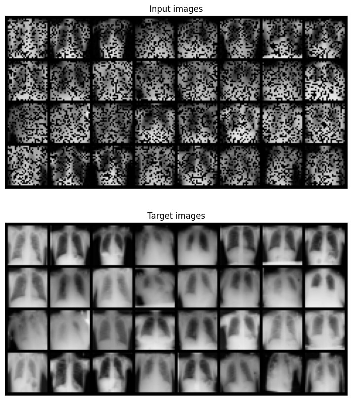
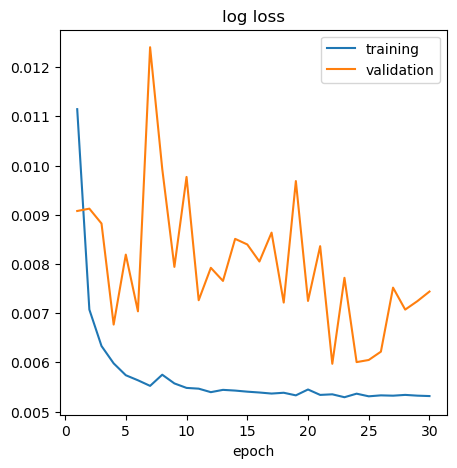
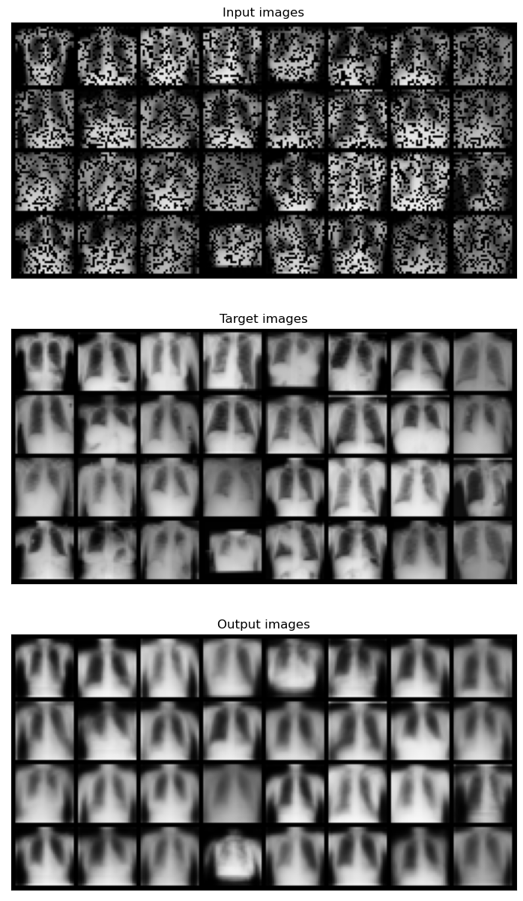

Neural Networks with Custom Datasets#
import os, glob, random
import matplotlib.pyplot as plt
import numpy as np
from PIL import Image
import torch
import torch.nn as nn
from torch.utils.data import Dataset, DataLoader
from torchvision.datasets import ImageFolder
from torchvision.transforms import GaussianBlur, ToTensor, Compose, Lambda
from torchvision.utils import make_grid
from torchsummary import summary
def set_seed(seed):
"""Set ALL the random seeds to a fixed value and take out any randomness from cuda kernels."""
random.seed(seed)
np.random.seed(seed)
torch.manual_seed(seed)
torch.cuda.manual_seed_all(seed)
torch.backends.cudnn.benchmark = False # uses the inbuilt cudnn auto-tuner to find the fastest convolution algorithms.
# Useful when inputs do not change size.
torch.backends.cudnn.enabled = False
return True
def set_device(device="cpu", idx=0):
if device != "cpu":
if torch.cuda.device_count() > idx and torch.cuda.is_available():
print("Cuda installed! Running on GPU {} {}!".format(idx, torch.cuda.get_device_name(idx)))
device="cuda:{}".format(idx)
elif torch.cuda.device_count() > 0 and torch.cuda.is_available():
print("Cuda installed but only {} GPU(s) available! Running on GPU 0 {}!".format(torch.cuda.device_count(), torch.cuda.get_device_name()))
device="cuda:0"
else:
device="cpu"
print("No GPU available! Running on CPU")
return device
device = set_device("cuda")
No GPU available! Running on CPU
Custom datasets#
torch.utils.data.Dataset เป็น abstract class ของ dataset
Dataset ต่าง ๆ ใน PyTorch (เช่น MNIST) ก็สืบทอดมาจาก class นี้
เราสามารถเขียน class ใหม่ที่สืบทอดมาจาก Dataset class สำหรับ dataset ของตัวเองได้ โดยต้อง override method ต่อไปนี้
__len__: return the size of the dataset__getitem__: support indexing (dataset[i] ต้อง return ข้อมูลตำแหน่งที่ i)
Example: butterfly dataset#
ไปยัง directory ที่มีไฟล์ kaggle.json และรันคำสั่งต่อไปนี้ใน Terminal เพื่อดาวน์โหลด dataset จาก Kaggle (ต้องทำ authentication ก่อน)
mkdir ~/.kaggle
cp ./kaggle.json ~/.kaggle
kaggle datasets download -d gpiosenka/butterfly-images40-species
mkdir ./butterfly-images40-species
unzip -q butterfly-images40-species.zip -d ./butterfly-images40-species
หากทำใน Google Colab ให้รันคำสั่งเหล่านี้แทน
!mkdir ~/.kaggle
!cp /content/drive/MyDrive/kaggle.json ~/.kaggle
!kaggle datasets download -d gpiosenka/butterfly-images40-species
!mkdir ./butterfly-images40-species
!unzip -q butterfly-images40-species.zip -d ./butterfly-images40-species
# Import butterfly train dataset
butterfly_train_dataset = ImageFolder("../data/butterfly-images40-species/train/")
# Print the information about the dataset
print(butterfly_train_dataset, "\n")
print(butterfly_train_dataset.class_to_idx)
Dataset ImageFolder
Number of datapoints: 12594
Root location: ../data/butterfly-images40-species/train/
{'ADONIS': 0, 'AFRICAN GIANT SWALLOWTAIL': 1, 'AMERICAN SNOOT': 2, 'AN 88': 3, 'APPOLLO': 4, 'ARCIGERA FLOWER MOTH': 5, 'ATALA': 6, 'ATLAS MOTH': 7, 'BANDED ORANGE HELICONIAN': 8, 'BANDED PEACOCK': 9, 'BANDED TIGER MOTH': 10, 'BECKERS WHITE': 11, 'BIRD CHERRY ERMINE MOTH': 12, 'BLACK HAIRSTREAK': 13, 'BLUE MORPHO': 14, 'BLUE SPOTTED CROW': 15, 'BROOKES BIRDWING': 16, 'BROWN ARGUS': 17, 'BROWN SIPROETA': 18, 'CABBAGE WHITE': 19, 'CAIRNS BIRDWING': 20, 'CHALK HILL BLUE': 21, 'CHECQUERED SKIPPER': 22, 'CHESTNUT': 23, 'CINNABAR MOTH': 24, 'CLEARWING MOTH': 25, 'CLEOPATRA': 26, 'CLODIUS PARNASSIAN': 27, 'CLOUDED SULPHUR': 28, 'COMET MOTH': 29, 'COMMON BANDED AWL': 30, 'COMMON WOOD-NYMPH': 31, 'COPPER TAIL': 32, 'CRECENT': 33, 'CRIMSON PATCH': 34, 'DANAID EGGFLY': 35, 'EASTERN COMA': 36, 'EASTERN DAPPLE WHITE': 37, 'EASTERN PINE ELFIN': 38, 'ELBOWED PIERROT': 39, 'EMPEROR GUM MOTH': 40, 'GARDEN TIGER MOTH': 41, 'GIANT LEOPARD MOTH': 42, 'GLITTERING SAPPHIRE': 43, 'GOLD BANDED': 44, 'GREAT EGGFLY': 45, 'GREAT JAY': 46, 'GREEN CELLED CATTLEHEART': 47, 'GREEN HAIRSTREAK': 48, 'GREY HAIRSTREAK': 49, 'HERCULES MOTH': 50, 'HUMMING BIRD HAWK MOTH': 51, 'INDRA SWALLOW': 52, 'IO MOTH': 53, 'Iphiclus sister': 54, 'JULIA': 55, 'LARGE MARBLE': 56, 'LUNA MOTH': 57, 'MADAGASCAN SUNSET MOTH': 58, 'MALACHITE': 59, 'MANGROVE SKIPPER': 60, 'MESTRA': 61, 'METALMARK': 62, 'MILBERTS TORTOISESHELL': 63, 'MONARCH': 64, 'MOURNING CLOAK': 65, 'OLEANDER HAWK MOTH': 66, 'ORANGE OAKLEAF': 67, 'ORANGE TIP': 68, 'ORCHARD SWALLOW': 69, 'PAINTED LADY': 70, 'PAPER KITE': 71, 'PEACOCK': 72, 'PINE WHITE': 73, 'PIPEVINE SWALLOW': 74, 'POLYPHEMUS MOTH': 75, 'POPINJAY': 76, 'PURPLE HAIRSTREAK': 77, 'PURPLISH COPPER': 78, 'QUESTION MARK': 79, 'RED ADMIRAL': 80, 'RED CRACKER': 81, 'RED POSTMAN': 82, 'RED SPOTTED PURPLE': 83, 'ROSY MAPLE MOTH': 84, 'SCARCE SWALLOW': 85, 'SILVER SPOT SKIPPER': 86, 'SIXSPOT BURNET MOTH': 87, 'SLEEPY ORANGE': 88, 'SOOTYWING': 89, 'SOUTHERN DOGFACE': 90, 'STRAITED QUEEN': 91, 'TROPICAL LEAFWING': 92, 'TWO BARRED FLASHER': 93, 'ULYSES': 94, 'VICEROY': 95, 'WHITE LINED SPHINX MOTH': 96, 'WOOD SATYR': 97, 'YELLOW SWALLOW TAIL': 98, 'ZEBRA LONG WING': 99}
butterfly, target = butterfly_train_dataset[42]
fig, ax = plt.subplots(figsize=(3, 3))
ax.imshow(butterfly)
ax.set(title=list(butterfly_train_dataset.class_to_idx)[0]);

เราต้องการเบลอภาพผีเสื้อใน dataset เพื่อใช้เป็น input สำหรับทำ deblurring task ต่อไป
class BlurredButterflyDataset(Dataset):
"""Class to blur the dataset."""
def __init__(self, root, kernel_size, sigma=(0.1, 2.0), transform=None):
self.transform = transform
self.root = root
self.kernel_size = kernel_size
self.sigma = sigma
self.data_paths = self._get_image_paths()
def _get_image_paths(self, exts=(".jpeg", ".jpg", ".png")):
data_paths = []
for root, dirs, files in os.walk(self.root):
for file in files:
if(file.endswith(exts)):
data_paths.append(os.path.join(root,file))
return data_paths
def __getitem__(self, idx):
# Load image
img_path = self.data_paths[idx]
img = Image.open(img_path).convert("RGB")
# Let's make to Tensor compulsory so we can manipulate the image as a tensor inside __getitem__
img = ToTensor()(img)
# Apply other transforms
if self.transform:
img = self.transform(img)
# Blurred image
blurred_img = GaussianBlur(kernel_size=self.kernel_size, sigma=self.sigma)(img)
return blurred_img, img
def __len__(self):
return len(self.data_paths)
def __str__(self):
class_string = ""
class_string += self.__class__.__name__
class_string+="\n\tlen : %d"%self.__len__()
for key, value in self.__dict__.items():
if key != "data_paths":
class_string+="\n\t" + str(key) + " : " + str(value)
return class_string
butterfly_train_dataset = BlurredButterflyDataset(
root="../data/butterfly-images40-species/train/",
kernel_size=(5, 5),
sigma=(2, 2)
)
print(butterfly_train_dataset)
BlurredButterflyDataset
len : 12594
transform : None
root : ../data/butterfly-images40-species/train/
kernel_size : (5, 5)
sigma : (2, 2)
input_img, target_img = butterfly_train_dataset[0]
fig, axes = plt.subplots(1, 2, figsize=(8, 3))
axes[0].imshow(input_img.permute(1, 2, 0))
axes[0].set(title="Input (blurred) image")
axes[1].imshow(target_img.permute(1, 2, 0))
axes[1].set(title="Target (original) image");

Example: ChestMNIST dataset#
# Download the ChestMNIST dataset and move it from the current folder to the "../data" directory
# (ต้องติดตั้ง wget ก่อน (pip install wget))
!python -m wget https://zenodo.org/record/6496656/files/chestmnist.npz
!move chestmnist.npz ../data
Saved under chestmnist.npz
1 file(s) moved.
# Import data
data_path = "../data/chestmnist.npz"
data = np.load(data_path)
print(data.files)
['train_images', 'val_images', 'test_images', 'train_labels', 'val_labels', 'test_labels']
เราต้องการปิดบาง pixel ของทุกภาพใน dataset เพื่อใช้เป็น input สำหรับการกู้ภาพคืน
class ChestMNIST(Dataset):
"""
Class for masking the images of the ChestMNIST dataset.
Parameters
----------
data_path : str
The path to the data.
p : float
A probability for a random mask.
split : str
A split argument to dictate what part of the data to load ("train", "validation", "test").
transform: torchvision.transforms
A transform to be applied to the data.
"""
def __init__(self, data_path, p=0.5, transform=None, split="train"):
self.data_path = data_path
self.p = p
self.transform = transform
split_dict = {"train": "train_images", "validation": "val_images", "test": "test_images"}
if split in split_dict:
self.data = np.load(data_path)[split_dict[split]]
else:
raise ValueError("split parameter must be 'train', 'validation', or 'test'")
# Transform to Tensor and add channel dimension
self.data = torch.from_numpy(self.data).unsqueeze(1)
def _get_mask(self, img_shape):
"""
Generates a binary mask of the size of the sample to
randomly erasesome data points based on the probability p.
"""
c, w, h = img_shape
masked_points = int((1 - self.p) * w * h)
masked_idx = torch.randint(0, w * h, (masked_points,))
mask = torch.ones((w * h))
mask[masked_idx] = 0
mask = mask.view(1, w, h)
mask.repeat(c, 1, 1)
return mask
def __getitem__(self, idx):
sample = self.data[idx]
# Apply transforms
if self.transform:
sample = self.transform(sample)
# Mask data
mask = self._get_mask(sample.shape)
masked_sample = sample * mask
return masked_sample, sample
def __len__(self):
return len(self.data)
def __str__(self):
class_string = ""
class_string += self.__class__.__name__
class_string+="\n\t len : %d"%self.__len__()
for key, value in self.__dict__.items():
if key != "data" and key != "mask":
class_string+="\n\t" + str(key) + " : " + str(value)
return class_string
# Instantiate the class for a training set and a validation set
train_dataset = ChestMNIST(data_path, split="train")
val_dataset = ChestMNIST(data_path, split="validation")
# Print some information about the dataset
print(len(train_dataset), len(val_dataset))
print(train_dataset.data.shape)
print(train_dataset.data.min(), train_dataset.data.max())
78468 11219
torch.Size([78468, 1, 28, 28])
tensor(0, dtype=torch.uint8) tensor(253, dtype=torch.uint8)
# The number of pixels of an image
num_pixels = 28*28
# Plot one input and output for each of these sets
fig, axes = plt.subplots(2, 2, figsize=(8, 8))
axes[0][0].imshow(train_dataset[0][0][0], cmap="plasma")
axes[0][0].set(title="The first training input image")
axes[0][1].imshow(train_dataset[0][1][0], cmap="plasma")
axes[0][1].set(title="The first training target image")
axes[1][0].imshow(val_dataset[0][0][0], cmap="plasma")
axes[1][0].set(title="The first validation input image")
axes[1][1].imshow(val_dataset[0][1][0], cmap="plasma")
axes[1][1].set(title="The first validation target image");

class simpleFFN(nn.Module):
"""Class for a simple feed-forward network."""
def __init__(self, input_size, hidden_size_1=200, hidden_size_2=100, hidden_size_3=100, hidden_size_4=200):
super(simpleFFN, self).__init__()
self.hidden_1 = nn.Linear(input_size, hidden_size_1, bias=False)
self.hidden_2 = nn.Linear(hidden_size_1, hidden_size_2, bias=False)
self.hidden_3 = nn.Linear(hidden_size_2, hidden_size_3, bias=False)
self.hidden_4 = nn.Linear(hidden_size_3, hidden_size_4, bias=False)
self.output = nn.Linear(hidden_size_4, input_size, bias=False)
self.activation = nn.Mish()
self.sigmoid = nn.Sigmoid()
def forward(self, X):
z1 = self.hidden_1(X.flatten(start_dim=1))
a1 = self.activation(z1)
z2 = self.hidden_2(a1)
a2 = self.activation(z2)
z3 = self.hidden_3(a2)
a3 = self.activation(z3)
z4 = self.hidden_4(a3)
a4 = self.activation(z4)
z5 = self.output(a4)
a5 = self.sigmoid(z5)
return a5.view(X.shape)
model = simpleFFN(input_size=num_pixels).to(device)
summ = summary(model=model, input_size=(1, 28, 28))
----------------------------------------------------------------
Layer (type) Output Shape Param #
================================================================
Linear-1 [-1, 200] 156,800
Mish-2 [-1, 200] 0
Linear-3 [-1, 100] 20,000
Mish-4 [-1, 100] 0
Linear-5 [-1, 100] 10,000
Mish-6 [-1, 100] 0
Linear-7 [-1, 200] 20,000
Mish-8 [-1, 200] 0
Linear-9 [-1, 784] 156,800
Sigmoid-10 [-1, 784] 0
================================================================
Total params: 363,600
Trainable params: 363,600
Non-trainable params: 0
----------------------------------------------------------------
Input size (MB): 0.00
Forward/backward pass size (MB): 0.02
Params size (MB): 1.39
Estimated Total Size (MB): 1.41
----------------------------------------------------------------
# Hyperparameters
set_seed(42)
p = 0.6
lr = 1e-2
batch_size = 128
num_workers = 0
wd = 1e-6
n_epochs = 30
# Training set up
model = simpleFFN(
input_size=num_pixels,
hidden_size_1=150,
hidden_size_2=50,
hidden_size_3=50,
hidden_size_4=150
).to(device)
optimiser = torch.optim.Adam(params=model.parameters(), lr=lr, weight_decay=wd)
mseloss = nn.MSELoss()
# Dataset and dataloader
transform = Compose([Lambda(lambda x: x/255.)])
train_dataset = ChestMNIST(data_path, split="train", p=p, transform=transform)
val_dataset = ChestMNIST(data_path, split="validation", p=p, transform=transform)
train_loader = DataLoader(dataset=train_dataset, batch_size=batch_size, num_workers=num_workers, shuffle=True)
val_loader = DataLoader(dataset=val_dataset, batch_size=batch_size, num_workers=num_workers, shuffle=False)
# Visualise a batch sample
inputs, targets = next(iter(train_loader))
input_grid = make_grid(inputs[:32])
target_grid = make_grid(targets[:32])
fig, axes = plt.subplots(2, 1, figsize=(10, 10))
axes[0].imshow(input_grid.permute(1, 2, 0))
axes[0].set(title="Input images", xticks=[], yticks=[])
axes[1].imshow(target_grid.permute(1, 2, 0))
axes[1].set(title="Target images", xticks=[], yticks=[]);

def train(model, optimizer, criterion, data_loader):
model.train()
train_loss = 0.
for inp, target in data_loader:
inp, target = inp.to(device), target.to(device)
optimizer.zero_grad()
outp = model(inp)
loss = criterion(outp, target)
loss.backward()
train_loss += loss*inp.size(0)
optimizer.step()
avg_train_loss = train_loss / len(data_loader.dataset)
return avg_train_loss
def validate(model, criterion, data_loader):
model.eval()
val_loss = 0.
with torch.no_grad():
for inp, target in data_loader:
inp, target = inp.to(device), target.to(device)
outp = model(inp)
loss = criterion(outp, target)
val_loss += loss*inp.size(0)
avg_val_loss = val_loss / len(data_loader.dataset)
return avg_val_loss
# Compute log loss of the model and plot it over epoches
# You can use the "livelossplot" module to plot a real-time evolution of loss
train_losses, val_losses = [], []
for epoch in range(n_epochs):
train_loss = train(model, optimiser, mseloss, train_loader)
train_losses.append(train_loss.item())
val_loss = validate(model, mseloss, val_loader)
val_losses.append(val_loss.item())
---------------------------------------------------------------------------
KeyboardInterrupt Traceback (most recent call last)
Cell In[24], line 5
3 train_losses, val_losses = [], []
4 for epoch in range(n_epochs):
----> 5 train_loss = train(model, optimiser, mseloss, train_loader)
6 train_losses.append(train_loss.item())
7 val_loss = validate(model, mseloss, val_loader)
Cell In[23], line 11, in train(model, optimizer, criterion, data_loader)
9 loss.backward()
10 train_loss += loss*inp.size(0)
---> 11 optimizer.step()
12 avg_train_loss = train_loss / len(data_loader.dataset)
13 return avg_train_loss
File ~\AppData\Local\Programs\Python\Python311\Lib\site-packages\torch\optim\optimizer.py:356, in Optimizer.profile_hook_step.<locals>.wrapper(*args, **kwargs)
353 @staticmethod
354 def profile_hook_step(func: Callable[_P, R]) -> Callable[_P, R]:
--> 356 @functools.wraps(func)
357 def wrapper(*args: _P.args, **kwargs: _P.kwargs) -> R:
358 self, *_ = args
359 self = cast(Optimizer, self)
KeyboardInterrupt:
fig, ax = plt.subplots(figsize=(5, 5))
ax.plot(range(1, n_epochs+1), train_losses, label="training")
ax.plot(range(1, n_epochs+1), val_losses, label="validation")
ax.set(title="log loss", xlabel="epoch")
ax.legend();

# Visualise 32 input, reconstructed and target samples from a validation batch
inputs, targets = next(iter(val_loader))
inputs, targets = inputs[:32], targets[:32]
outputs = model(inputs.to(device))
input_grid = make_grid(inputs)
output_grid = make_grid(outputs)
target_grid = make_grid(targets)
fig, axes = plt.subplots(3, 1, figsize=(25, 15))
axes[0].imshow(input_grid.detach().cpu().permute(1, 2, 0))
axes[0].set(title="Input images", xticks=[], yticks=[])
axes[1].imshow(target_grid.detach().cpu().permute(1, 2, 0))
axes[1].set(title="Target images", xticks=[], yticks=[])
axes[2].imshow(output_grid.detach().cpu().permute(1, 2, 0))
axes[2].set(title="Output images", xticks=[], yticks=[]);

# Pytorch stores all the parameters of models and optimizers, their weights and biases
# in an easy to read dictionary called a "state-dict".
# Print model's state_dict
print("Model's state_dict:")
for param_tensor in model.state_dict():
print(param_tensor, "->", model.state_dict()[param_tensor].size())
# Print optimiser's state_dict
print("\nOptimiser's state_dict:")
for var_name in optimiser.state_dict():
print(var_name, "->", optimiser.state_dict()[var_name])
Model's state_dict:
hidden_1.weight -> torch.Size([150, 784])
hidden_2.weight -> torch.Size([50, 150])
hidden_3.weight -> torch.Size([50, 50])
hidden_4.weight -> torch.Size([150, 50])
output.weight -> torch.Size([784, 150])
Optimiser's state_dict:
state -> {0: {'step': tensor(18420.), 'exp_avg': tensor([[ 7.0417e-07, 3.1154e-07, 6.5955e-07, ..., 1.0194e-05,
9.8043e-06, 9.2225e-06],
[-4.7063e-09, 1.1785e-09, -3.4386e-09, ..., 8.2109e-09,
-3.4130e-09, -2.5317e-09],
[-4.9875e-09, 1.0603e-09, -3.7007e-09, ..., 8.0137e-09,
-4.0406e-09, -3.3319e-09],
...,
[-5.2294e-09, 1.3292e-09, -3.8506e-09, ..., 9.3408e-09,
-3.3170e-09, -2.0317e-09],
[-9.2062e-08, 2.3113e-08, -3.3543e-08, ..., 5.0905e-08,
-5.1181e-08, -6.9720e-09],
[-3.1152e-08, 2.9160e-09, -2.0423e-08, ..., 7.6678e-09,
-4.2773e-08, -2.3818e-08]]), 'exp_avg_sq': tensor([[4.8138e-11, 3.8299e-11, 4.1255e-11, ..., 5.3350e-10, 3.1798e-10,
2.0986e-10],
[6.0531e-16, 4.5832e-16, 4.9668e-16, ..., 5.0312e-15, 2.8678e-15,
2.2326e-15],
[6.8832e-16, 5.1706e-16, 5.6711e-16, ..., 5.7926e-15, 3.3192e-15,
2.5564e-15],
...,
[5.5380e-16, 4.2034e-16, 4.5378e-16, ..., 4.5395e-15, 2.5859e-15,
2.0259e-15],
[9.8925e-14, 7.6440e-14, 8.7031e-14, ..., 7.5341e-13, 4.4230e-13,
3.2914e-13],
[5.9769e-15, 4.3559e-15, 4.8937e-15, ..., 5.4190e-14, 3.1990e-14,
2.3572e-14]])}, 1: {'step': tensor(18420.), 'exp_avg': tensor([[-1.4308e-06, 1.1951e-07, 1.1932e-07, ..., 1.2512e-07,
1.5839e-07, 1.4103e-07],
[ 2.2484e-06, 8.3769e-08, 8.3694e-08, ..., 8.8226e-08,
1.0731e-07, 1.0298e-07],
[ 1.0298e-04, -3.2562e-06, -3.1855e-06, ..., -3.3374e-06,
-3.5588e-06, -2.7453e-06],
...,
[-1.0576e-04, 2.6303e-06, 2.5452e-06, ..., 2.7776e-06,
3.3604e-06, 2.7459e-06],
[-8.7518e-06, -5.2493e-07, -5.2239e-07, ..., -5.1793e-07,
-6.7220e-07, -3.6117e-07],
[-1.0774e-06, 1.5504e-08, 1.4427e-08, ..., 1.7163e-08,
2.7126e-08, 1.8418e-08]]), 'exp_avg_sq': tensor([[1.2282e-09, 3.8714e-13, 3.9622e-13, ..., 3.8324e-13, 6.5698e-13,
4.4015e-13],
[3.6035e-09, 8.2569e-13, 8.3857e-13, ..., 8.1797e-13, 1.3985e-12,
8.9327e-13],
[1.3049e-06, 1.5459e-10, 1.5615e-10, ..., 1.5334e-10, 3.7271e-10,
1.6475e-10],
...,
[2.6949e-07, 4.1281e-11, 4.1683e-11, ..., 4.1128e-11, 9.3133e-11,
4.4297e-11],
[6.3474e-07, 9.2408e-11, 9.3282e-11, ..., 9.1142e-11, 2.0764e-10,
9.6147e-11],
[2.0366e-11, 3.2464e-14, 3.2584e-14, ..., 3.2315e-14, 3.4732e-14,
3.1833e-14]])}, 2: {'step': tensor(18420.), 'exp_avg': tensor([[ 6.0799e-06, 8.8881e-06, -2.9026e-04, ..., -2.7659e-04,
-1.3234e-04, -2.3726e-07],
[ 9.6949e-07, -3.7632e-07, -1.6993e-05, ..., 4.4910e-06,
2.4249e-05, -2.2220e-07],
[-4.0470e-07, -6.5451e-07, 9.7971e-06, ..., 1.8667e-05,
1.6966e-05, 1.1718e-07],
...,
[ 7.9572e-07, -2.9062e-06, 1.8873e-04, ..., 1.6881e-04,
3.4530e-05, 6.6746e-07],
[-1.6793e-07, -6.1596e-07, 5.9832e-06, ..., 1.6300e-05,
1.4303e-05, -2.2513e-08],
[-5.7769e-08, -2.1622e-07, -3.5697e-06, ..., 6.1510e-06,
7.7897e-06, -6.5901e-08]]), 'exp_avg_sq': tensor([[1.7167e-10, 4.9395e-10, 1.2277e-06, ..., 4.0191e-07, 6.6352e-07,
1.2771e-11],
[1.9639e-11, 5.4378e-11, 1.0943e-07, ..., 2.3160e-08, 6.2177e-08,
1.8577e-12],
[1.2170e-11, 3.5195e-11, 1.2530e-07, ..., 2.1024e-08, 5.8817e-08,
4.9677e-13],
...,
[2.2367e-10, 6.8551e-10, 1.5888e-06, ..., 4.0433e-07, 9.2755e-07,
2.5420e-11],
[1.1680e-11, 3.5357e-11, 8.3626e-08, ..., 1.8966e-08, 3.8858e-08,
7.9971e-13],
[1.2759e-11, 3.5302e-11, 8.8820e-08, ..., 1.7470e-08, 4.3317e-08,
8.5048e-13]])}, 3: {'step': tensor(18420.), 'exp_avg': tensor([[ 5.5959e-08, 1.2073e-08, -5.3559e-09, ..., 4.4260e-08,
-1.7905e-09, -1.3390e-09],
[ 5.5926e-08, 1.2065e-08, -5.3529e-09, ..., 4.4219e-08,
-1.7920e-09, -1.3410e-09],
[-1.8549e-05, -1.3655e-06, 3.8303e-06, ..., -7.7137e-05,
1.1503e-06, 1.3380e-06],
...,
[-1.4328e-05, 5.1459e-07, -9.6576e-07, ..., 1.9475e-06,
-7.8399e-07, -8.4681e-07],
[ 5.6207e-08, 1.2136e-08, -5.3785e-09, ..., 4.4559e-08,
-1.7791e-09, -1.3241e-09],
[ 7.9725e-06, -2.2852e-06, -2.6495e-06, ..., 4.1406e-05,
-1.0651e-06, -1.3596e-06]]), 'exp_avg_sq': tensor([[7.9285e-14, 5.5973e-15, 2.5776e-15, ..., 2.7651e-13, 8.0013e-16,
8.1753e-16],
[7.9177e-14, 5.5906e-15, 2.5749e-15, ..., 2.7609e-13, 7.9917e-16,
8.1664e-16],
[2.4971e-08, 5.3996e-10, 5.0596e-10, ..., 8.8386e-08, 8.7116e-11,
9.6555e-11],
...,
[1.6324e-08, 7.7329e-10, 2.8983e-10, ..., 3.4886e-08, 5.8317e-11,
5.9471e-11],
[8.0133e-14, 5.6419e-15, 2.6014e-15, ..., 2.7975e-13, 8.0787e-16,
8.2486e-16],
[1.5381e-09, 2.3916e-10, 4.0227e-11, ..., 1.0037e-08, 5.4979e-12,
1.1556e-11]])}, 4: {'step': tensor(18420.), 'exp_avg': tensor([[-1.0969e-09, -1.0977e-09, 1.1253e-06, ..., 4.8464e-07,
-1.0900e-09, -2.1161e-07],
[-7.4477e-09, -7.4474e-09, 9.1992e-07, ..., 2.1556e-07,
-7.4464e-09, -1.3604e-07],
[-6.0650e-09, -6.0665e-09, 6.1520e-07, ..., 1.3102e-07,
-6.0486e-09, -1.2151e-07],
...,
[-3.7288e-09, -3.7275e-09, -1.5197e-06, ..., 1.4866e-06,
-3.7429e-09, -1.0080e-06],
[ 2.5815e-09, 2.5800e-09, -3.6139e-07, ..., 8.4636e-07,
2.5852e-09, 6.4068e-08],
[ 4.2092e-09, 4.2071e-09, 1.2392e-06, ..., 5.6184e-07,
4.2201e-09, 1.0779e-06]]), 'exp_avg_sq': tensor([[6.2958e-15, 6.2891e-15, 4.1977e-11, ..., 2.4498e-12, 6.3431e-15,
2.0170e-12],
[4.0981e-15, 4.0938e-15, 3.0326e-11, ..., 1.9326e-12, 4.1287e-15,
1.5346e-12],
[4.2328e-15, 4.2284e-15, 2.8602e-11, ..., 2.1142e-12, 4.2643e-15,
1.5300e-12],
...,
[2.4734e-14, 2.4706e-14, 4.3076e-11, ..., 7.8212e-12, 2.4937e-14,
6.8299e-12],
[1.8532e-14, 1.8511e-14, 3.0487e-11, ..., 5.9777e-12, 1.8683e-14,
5.9507e-12],
[1.9536e-14, 1.9514e-14, 3.2206e-11, ..., 6.3042e-12, 1.9689e-14,
6.7381e-12]])}}
param_groups -> [{'lr': 0.01, 'betas': (0.9, 0.999), 'eps': 1e-08, 'weight_decay': 1e-06, 'amsgrad': False, 'maximize': False, 'foreach': None, 'capturable': False, 'differentiable': False, 'fused': None, 'params': [0, 1, 2, 3, 4]}]
# Save the model and the optimiser as .pt files
# (.pt and .pth files are common file extensions for saving models in pytorch)
storing_dir = "../data" # Directory to store the files
model_filename = "chestmnist_simpleFFN_model.pt"
model_path = f"{storing_dir}/{model_filename}"
torch.save(model.state_dict(), model_path)
optimiser_filename = "chestmnist_simpleFFN_optimiser.pt"
optimiser_path = f"{storing_dir}/{optimiser_filename}"
torch.save(optimiser.state_dict(), optimiser_path)
# Create an instance of the model
model = simpleFFN(
input_size=num_pixels,
hidden_size_1=150,
hidden_size_2=50,
hidden_size_3=50,
hidden_size_4=150
).to(device)
# Load the parameters of the model in path
model_path = f"../data/chestmnist_simpleFFN_model.pt"
model.load_state_dict(torch.load(model_path))
model.eval()
# Compute average validation loss
val_loss = validate(model, mseloss, val_loader)
print("Average validation loss = %1.3f" % val_loss.item())
Average validation loss = 0.007